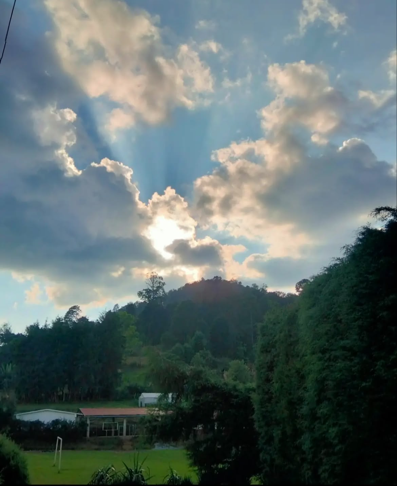
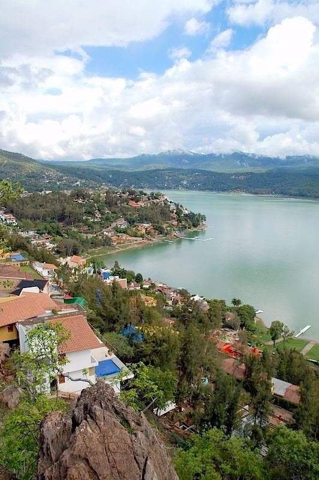
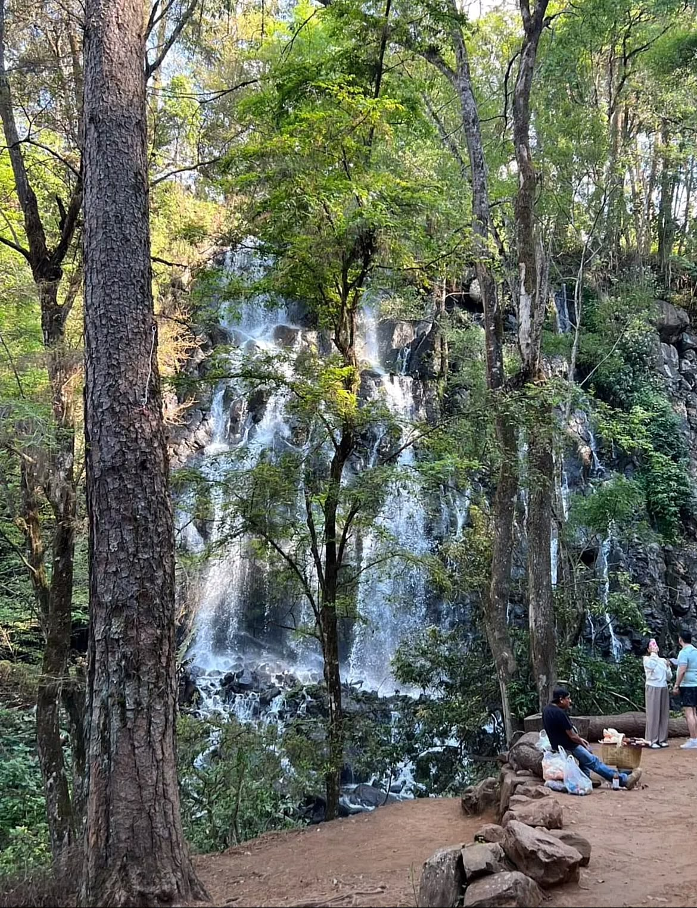
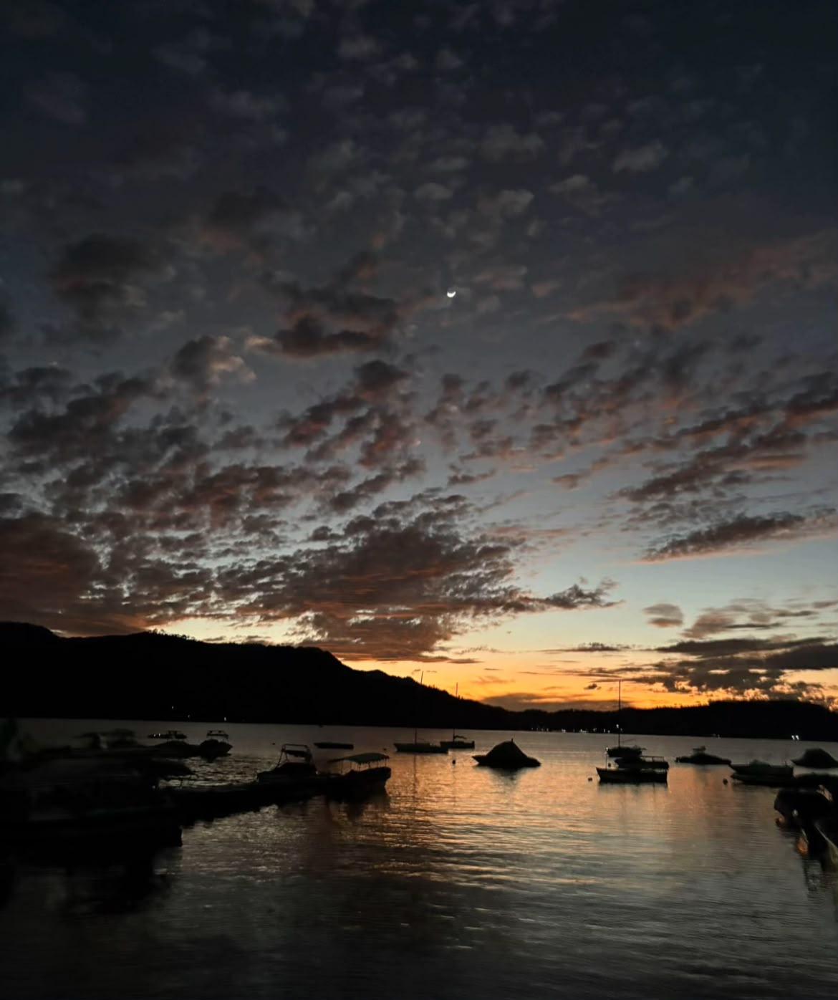
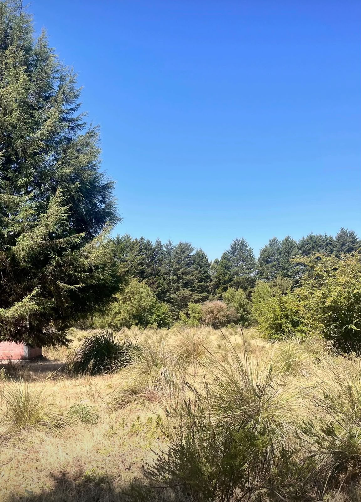
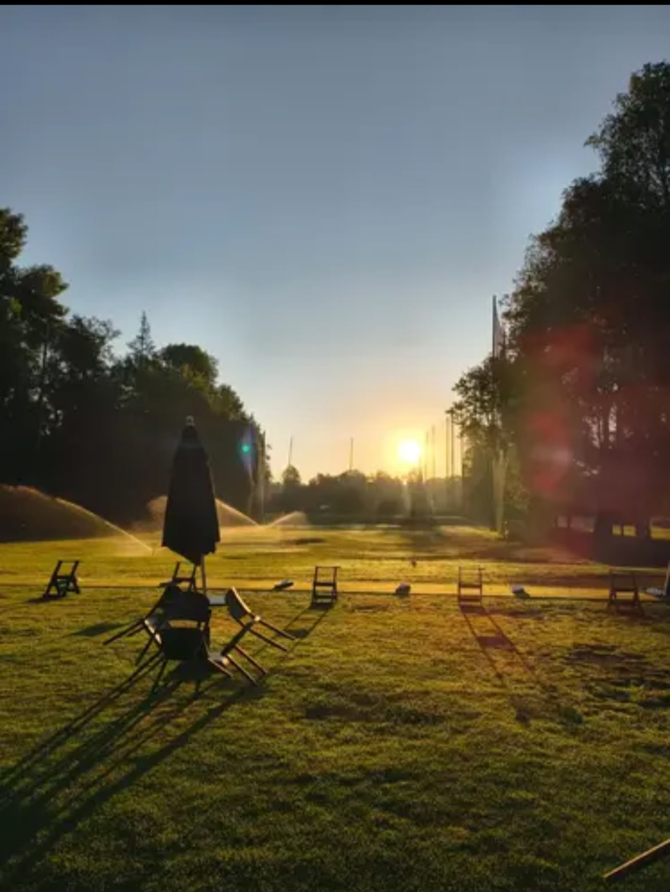

Un paisaje natural donde el sol se oculta parcialmente tras densas nubes, creando impresionantes rayos de luz que se abren paso hacia el cielo azul. En el horizonte se aprecia una colina cubierta de árboles y vegetación frondosa, mientras que en primer plano destaca una amplia zona verde con una casa de tejado rojizo rodeada de naturaleza. La iluminación suave y los contrastes entre las sombras de las nubes y la claridad del cielo transmiten una sensación de tranquilidad y conexión con el entorno natural.

Una vista panorámica capturada desde un punto elevado muestra un extenso lago de aguas tranquilas rodeado por colinas cubiertas de vegetación. A lo largo de la orilla se distribuyen casas y construcciones que se integran armoniosamente con el paisaje natural. En primer plano destacan formaciones rocosas y árboles frondosos, mientras que al fondo se aprecian montañas que se pierden bajo un cielo parcialmente nublado. La luz suave del día realza los tonos verdes del entorno y los reflejos del agua, creando una escena serena y equilibrada.

Una impresionante cascada se abre paso entre grandes rocas y una densa arboleda, creando un escenario natural lleno de frescura y belleza. El agua cae en múltiples corrientes desde distintos niveles, formando pequeños saltos que desembocan en una zona rocosa rodeada de vegetación. Altos árboles enmarcan la escena, filtrando la luz del sol a través de sus copas y aportando sombras suaves que resaltan los tonos verdes del bosque. En un sendero cercano, algunas personas observan el paisaje, añadiendo una sensación de escala a la majestuosidad del entorno.

Un espectacular atardecer se refleja sobre las aguas tranquilas de un lago, donde varias embarcaciones reposan en silencio cerca de la orilla. En el horizonte, las montañas aparecen como siluetas oscuras que contrastan con los tonos dorados y anaranjados del cielo. Sobre ellas, un manto de nubes dispersas adquiere matices cálidos mientras la luz del día se desvanece. En la parte superior de la escena, una delicada luna creciente comienza a hacerse visible, aportando un toque mágico a la transición entre el día y la noche.

Un amplio paisaje natural se extiende bajo un cielo completamente despejado de intenso color azul. En primer plano, la vegetación silvestre está compuesta por pastizales secos y arbustos dispersos que aportan textura y contraste al terreno. A la izquierda destaca un imponente árbol de gran altura, mientras que al fondo se observa una densa franja de bosque formada por coníferas y otras especies arbóreas. La luz brillante del día resalta los diferentes tonos de verde y dorado, creando una escena sencilla y armoniosa que refleja la tranquilidad del entorno natural.

Un hermoso amanecer ilumina una amplia pradera de césped perfectamente cuidado, mientras el sol asoma en el horizonte entre filas de árboles. Las sombras alargadas de varias sillas y una sombrilla cerrada se proyectan sobre el terreno, creando un atractivo juego de luces y contrastes. En el fondo, varios aspersores riegan el campo, formando delicados arcos de agua que brillan con los primeros rayos del día. La escena transmite calma, frescura y el inicio de una nueva jornada en plena naturaleza.